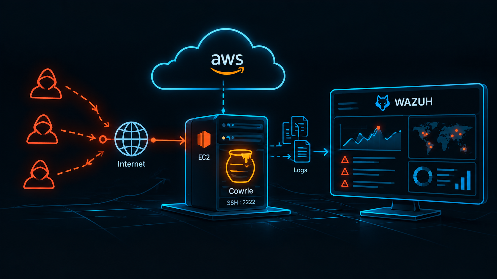

Despliegue de un honeypot en AWS y análisis de actividad maliciosa real
Diseño y despliegue de un honeypot expuesto a Internet en AWS para registrar y analizar actividad maliciosa real, utilizando Cowrie como señuelo SSH y Wazuh para la monitorización y análisis de eventos.
Ver proyecto →